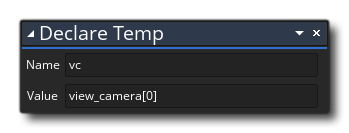
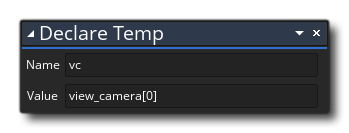
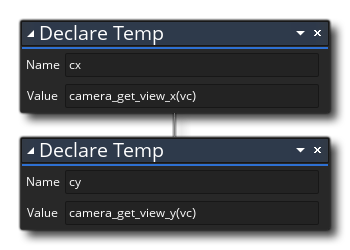
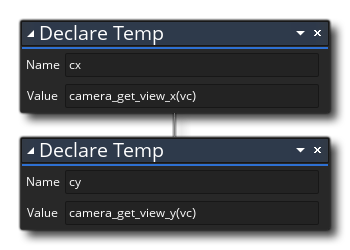
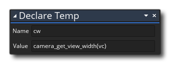
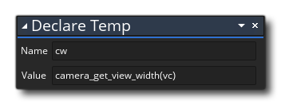
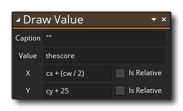
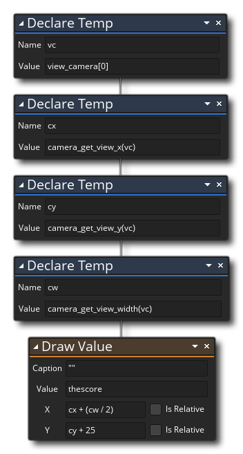

In our draw event we want to draw the score text on the screen at the same position at all times. This means that we can't use an absolute room position since as the camera moves about, the text will be lost off of one side or the other of the camera view. So what we need to do is draw the score text relative to the view camera. To make this easier we are going to use a couple of local (temporary) variables. We already know about global scope variables (they belong to the game, not any object in particular and can be read/set by all at any time), and instance scope variables (which are unique to every object instance, but can be accessed by other objects using the "point" method or "with", as discussed in Chapter 3)... but there is a third class of variables called local or temporary variables which we are going to use now.
A temporary or local variable is simply defined as one that is "local" to the script or event that is using it. This means that it is created when you use the action  and then discarded again at the end of the event or script that created it. This is useful for many, many things, not least of which is storing one-off values from calculations and saving memory resources. In this case we want to use local variables to store some return values from functions that we will use in the code.
and then discarded again at the end of the event or script that created it. This is useful for many, many things, not least of which is storing one-off values from calculations and saving memory resources. In this case we want to use local variables to store some return values from functions that we will use in the code.
Go ahead and drag the Declare Temp  action into the general Draw Event action workspace now and fill in the following:

action into the general Draw Event action workspace now and fill in the following:

Here we are getting the ID value for the camera assigned to view port[0] using the built-in global scope array view_camera, and then storing it in the temporary variable "vc". You can have multiple view ports active in a room (up to 8, starting at 0, so it's view_camera[0 ... 7]) and can assign a camera to each one, so referencing (for example) view_camera[3] will mean you are dealing with the camera assigned to view port[3]. In this case we use view port[0] since that is the one we set up in the room editor in the last chapter.
We then need to get the position of the view camera within the room space, so we use the Declare Temp  action two more times:

action two more times:

There is no action available for getting the position of a view and so we have to use a function in the "value" argument. These functions will return the (x/y) position of the view and store each one in the temporary variables "cx" and "cy", and note how we use the previously declared temporary variable here. We want to get one final value now so that we can position the text correctly in the middle of the screen, so add a final Declare Temp  action:

action:

Now we have those values in our temporary variables, actually drawing the text requires a single action - the Draw Value action : 
All we are doing here is taking the position of the view within the room and then using those values to position the text we want to draw at a relative position, meaning that it will now move with the view camera (specifically, it'll always be at the top of the view port and centered). With that done you should have a full set of actions that looks like this: 
You could drop this instance into the game room, but all you'd see would be a "0" on the screen since we don't actually add to the score value yet, so let's do that now.